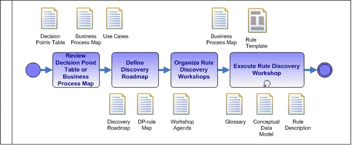

|
Rule Discovery is also named Business Rules
Modeling in the industry and has the focus to develop simple modeling artifacts like rule descriptions, business entity
diagrams and business process maps.
The purposes of Rule Discovery are:
-
To define the rule classification from the business process
-
To attach decision point to business process activities and / or use case
steps
-
To define the rule sources for the discovery and the type of roadmap to support
the knowledge acquisition.
-
To formalize the rules using templates and business term and language
understood by the business user
-
To prepare the test data for the rules
-
To define the object model for the rules
If the business modeling activity is done during the Inception phase of
the project you should leverage the previous artifacts like the conceptual data model and the decision point
table.
The discovery activities are conducted during the Elaboration phase of the
project, but the same process is conducted even after the system has gone into production when there is a new business
event, or when there is a need to modify the decision logic of the application.

The most unique aspect of the rules discovery phase is the perception of a business
event as a set of decision-rich activities. We unravel a business event as a set of decisions and policies. We then
dissect the decisions and policies into executable and precise business rules that guide the business event in a
predictable and desirable manner.
|